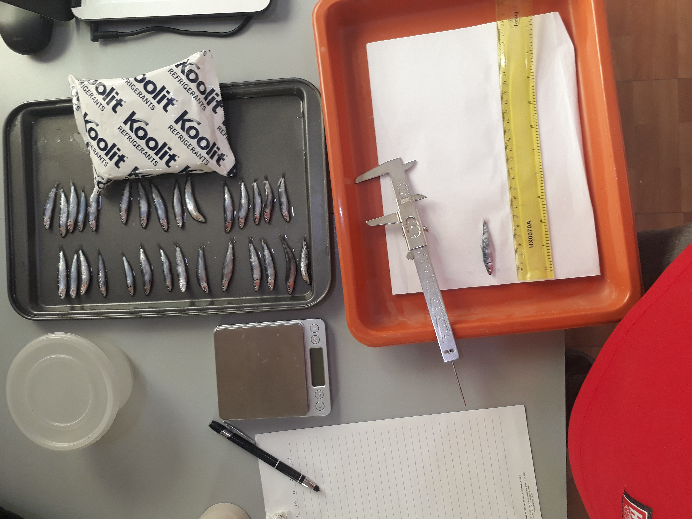

About me
My name is Omar Mahadalle and I am a graduate student working on my master's thesis. I received my Bachelor of Science degree in Marine Science from the Faculty of Marine Sciences and Fisheries at Red Sea University in Sudan. I was among the first batch of students sent by the Somali Government to study Marine Science on a scholarship program sponsored by the Sudanese government. After completing my undergraduate, I decided to move to the Philippines, to pursue my master's degree.
Research efforts
Somalia is located on the northwest Indian Ocean and has the longest coastline in mainland Africa, but unfortunately its marine environment remains largely unstudied primarily due to political instability and lack of specialized research institutes and local marine scientists. However in recent years, some of the universities mainly in Mogadishu -including Somali National University (SNU) were reopened in 2014 after being discontinued for many years during the civil war- began to offer degree programs in marine science but still lack research infrastructure and facilities. As a marine biologist, one of my aims is to revitalize marine scientific research and conduct pioneering projects in Somalia. Therefore, I am interested in setting up collaborative research partnerships with marine researchers around the world and connect them with universities back home. For collaborative research work, contact me.Current activities
I am spending most of my time coding, learning genomic data analysis techniques, and writing my thesis. I spend much of my spare time helping with the reestablishment efforts of the Somali National Museum.
